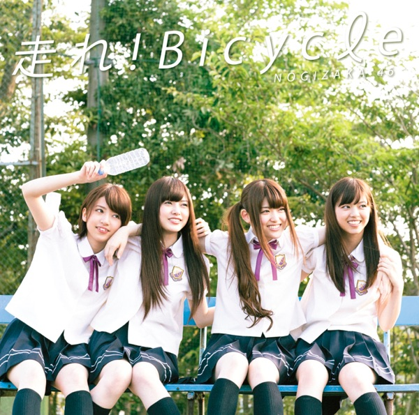

サカミチ
サカミチ海流の島よかいりゅうのしまよ

初収録リリース「走れ!Bicycle TypeD」のジャケット
乃木坂46
発売日：2012-08-22
収録：走れ!Bicycle TypeD（3rdSG）
種別：ユニット曲
作曲：Akira Sunset
編曲：京田誠一
ライブ披露：51件
歌唱メンバー（7名）
安藤美雲、川後陽菜、齋藤飛鳥、中元日芽香、畠中清羅、樋口日奈、和田まあや
この曲が披露されたライブ（51件）
新しい順に20件まで表示しています（全51件）。

初収録リリース「走れ!Bicycle TypeD」のジャケット
乃木坂46
発売日：2012-08-22
収録：走れ!Bicycle TypeD（3rdSG）
種別：ユニット曲
作曲：Akira Sunset
編曲：京田誠一
ライブ披露：51件
安藤美雲、川後陽菜、齋藤飛鳥、中元日芽香、畠中清羅、樋口日奈、和田まあや
新しい順に20件まで表示しています（全51件）。